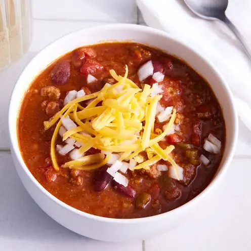

Just Like Wendy's Chili
- Total time1 hr and 35 mins
- Serves10
- Ingredients14
- Steps9

Ingredients
- 2 tablespoons olive oil
- 2 pounds ground beef
- 2 stalks celery, chopped
- 1 onion, chopped
- 1 green bell pepper, chopped
- 3 (14 ounce) cans stewed tomatoes
- 1 (14 ounce) can tomato sauce
- 1 (10 ounce) can diced tomatoes with green chiles (such as RO*TEL)
- 1 cup water
- 2 (1.25 ounce) packages chili seasoning (such as McCormick® Mild Chili Seasoning Mix)
- 1 (14 ounce) can kidney beans, undrained
- 1 (14 ounce) can pinto beans, undrained
- salt and ground black pepper to taste
- 1 tablespoon white vinegar, or more to taste
Directions
- Gather all ingredients.
- Heat olive oil in a large pot over medium-high heat. Press ground beef into the hot oil to form one large patty; let the bottom brown, 8 to 10 minutes.
- Stir and break browned beef into crumbles. Continue to cook until no longer pink, about 5 minutes longer.
- Stir celery, onion, and bell pepper into beef and cook until onion is translucent, about 5 minutes.
- Pour in stewed tomatoes, tomato sauce, diced tomatoes with green chiles, and water.
- Break apart large chunks of stewed tomatoes.
- Stir in chili seasoning. Stir in kidney and pinto beans. Season with salt and pepper.
- Bring to a boil, then reduce heat to low, and simmer for 1 hour.
- Mix vinegar into chili just before serving.
Recipe credit: allrecipes.com